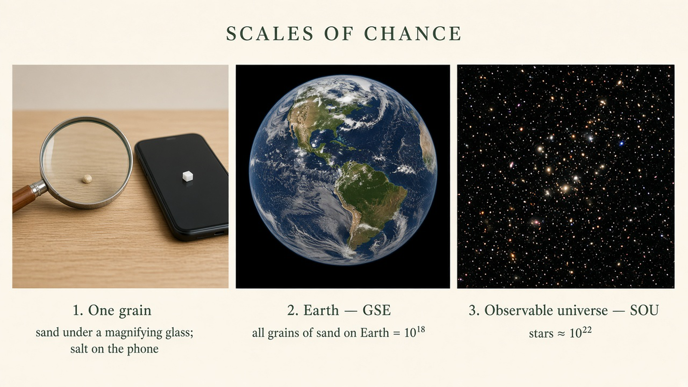

12-word seed
≈ 2128 ≈ 3.4×1038
About 128 bits of entropy. Already far beyond sand × stars × cells.
Teach process only. This site never generates SSH keys, Bitcoin seeds, or recovery phrases. Do not type a real private key or seed into any website — including this one.
Scales of chance
A private key is a secret number. The only reason guessing it is hopeless — if you created it well — is that the pile of possible numbers is almost unimaginably large. This site is here to make that size feel real, and to teach the process around SSH and Bitcoin keys. It will not make a key for you.

myprivatekeys.com is a static, educational site. We explain how people gather randomness, how SSH and Bitcoin secrets differ, and why extra bits of entropy multiply the search space instead of adding to it.
We do not generate, store, check, or recover keys. There is no backend, no “create seed” form, and no script in this repo that produces a private key. If a page on the internet offers to invent a recovery phrase for you, close it.
Humans are bad at picturing large numbers. These order-of-magnitude anchors are approximate — they are for intuition, not a physics paper:
Multiply those stories together — all the sand, times all the stars, times a huge pile of cells — and you still land short of a 12-word BIP39 seed space.
If you multiplied all the sand on Earth by all known stars, and still multiplied by a generous estimate of all human cells on the planet, you would still be short of the size of a 12-word seed space.
That 12-word space is about 2128 ≈ 3.4×1038 possibilities. A 24-word seed is about 2256 ≈ 1.2×1077 — roughly another entire 12-word universe larger, not twice as large.
The BIP39 English wordlist has 2048 words. Each extra bit of entropy doubles the number of guesses an attacker would have to consider. Going from 12 words (~128 bits of entropy) to 24 words (~256 bits) adds about 128 bits. That is about 2128 times more possibilities — on the order of 1038× — not 2×.
≈ 2128 ≈ 3.4×1038
About 128 bits of entropy. Already far beyond sand × stars × cells.
≈ 2256 ≈ 1.2×1077
About 256 bits. Roughly 2128× larger than 12 words — another full 12-word universe.
Read the numbers in the text. Decorative graphics may show fewer tiles than 12 or 24. The magnitudes above are the ones that matter.
Ed25519, a passphrase on the private key, and why the public half is the only thing that belongs on a server.
Read SSH practicesDice-gathered entropy, 12 vs 24 words, writing a seed offline, and never typing it into a website.
Read BIP39 notesLayered control: two keys must agree. This does not replace seed strength; it changes who must cooperate.
Read multisigSome people gather entropy with casino-style dice before they ever sit down at a wallet. A 5-die set is a common starting pack; people often buy two sets (10 dice) so rolls go faster. We link examples on the dice page. Buying dice does not make a seed, and this site will not turn rolls into words.